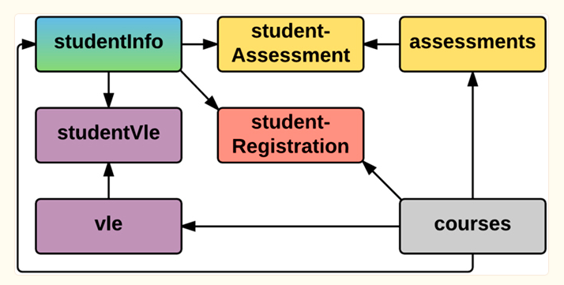

Predicting Outcomes from Student Engagement Data
Intervening to support positive outcomes
Abstract
Introduction
Higher Education Institutions (HEIs) are complex organisations offering educational services to a wide and diverse student body. HEIs have the delivery of educational success at their heart but they must also operate as viable businesses. The sucess of a HEI is measured by the success of its students - good outcomes for students equate with success for the HEI, including financial success, improved student recruitment and retention and reputational enhancement.
Learner Analytics is an ever growing field of research in Higher Education (HE). HE institutions are increasingly using data to inform decision making and to improve the student experience. In a sector report from 2017, it was found that HEIs “working towards implementation has nearly doubled from 34% to 66%” and that the focus has shifted “towards retention more than learning” (17% to 37%). (Newland, 2017).
This report evaluates the performance of several learning algorithms to predict student outcome using ‘student engagement’ data. It explores the potential for using data to establish whether there is an opportunity for early intervention in the the case of students who are predicted to fail or withdraw.
Data
Open University is one of the world’s largest distance learning providers, with over 200,000 students (Wikipedia, 2023.) All of its teaching takes place in virtual learning environments (VLEs) and student interactions are recorded in log files.
It is important to note that students to not have ‘in-person’ teaching as is provided by most HEIs. Analysis and conclusions in this report cannot be diretly extended to HEIs that do provide in-person teaching - they may want to consider additional or different ‘engagement’ data.
However, the analysis and conclusions are generalisable to the extend that engagement behaviour is a good predictor of student outcome and that VLEs form a critical element of modern HE teaching provision.
Dataset
The Open University Learning Analytics Dataset (OULAD) contains data about courses, students and their interactions with Virtual Learning Environment (VLE) for seven selected courses (called modules). The dataset consists of tables connected using unique identifiers:

The dataset is rich, containing biographic and demographic characteristics about the students, including their gender, age, disability status, educational background, IMD band1, and region of origion. In addition to person details, the dataset contains information about students’ academic history, assessments and VLE interacations.
It includes registrations for seven modules across two academic years (2013/2014 and 2014/2015) with two intake months (February and October). In the raw data, there are 32593 student registrations from 28,785 uniqe students - 13,529 are active in 2013 and 19,064 in 2014.
Assessment data includes submissions throughout the course including assessment type, date, weight and score. VLE data includes type of count of interactions, date and time.
More details can be found here2.
Exploratory Data Analysis
Following initial data processing and feature engineering, the dataset contains 31437 rows and 27 potential features.3
Data Preprocessing
Footnotes
IMD is the
Index of Multiple Deprivationwhich is a standard measure of relative deprivation of the student using multiple variables.↩︎Additional details about OULAD preparation can be found here - https://www.nature.com/articles/sdata2017171#Sec2↩︎
See XXXX include github link↩︎